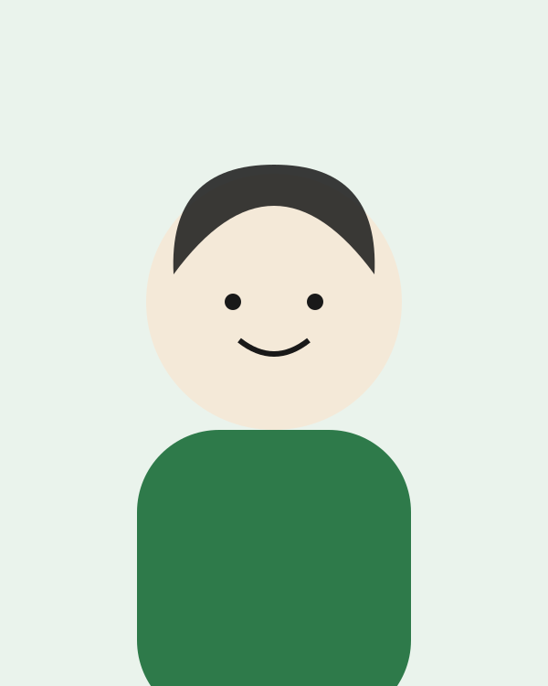
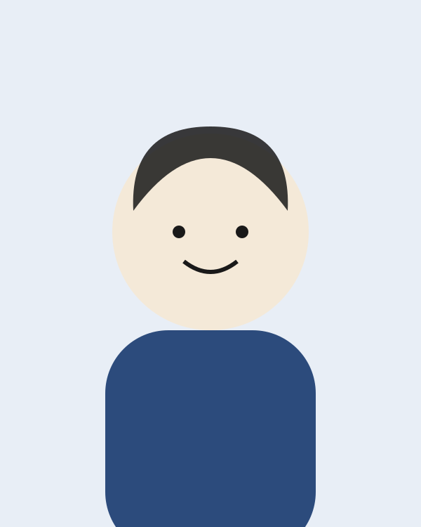
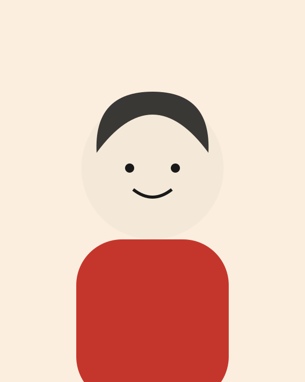
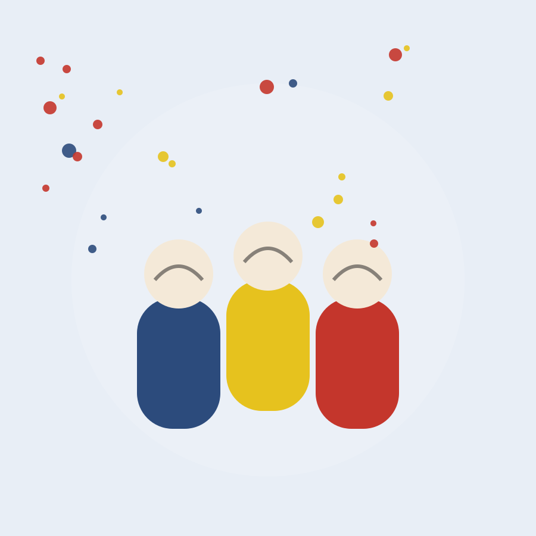

Auba Rosselló Daure
Treballadora social
Aporta el coneixement estructural del tercer sector: entén els ritmes, les necessitats i les realitats de les entitats amb què treballem.
Associació Honest · Palma, Mallorca
Honest neix el 2024 en estat embrionari i es constitueix com a associació sense ànim de lucre el febrer de 2025. Unim creativitat i tecnologia al servei del tercer sector: disseny, desenvolupament i intel·ligència artificial amb mirada social, sota un mateix sostre.

Les entitats socials tenen projectes d'altíssim impacte, però una mancança estructural en com els comuniquen i en les eines amb què treballen: els recursos sempre van al que sembla més urgent, i la creativitat i la tecnologia queden per al final.
Nosaltres posem justament això que no sempre es poden permetre: del relat a la plataforma digital. I, sobretot, posem la intel·ligència artificial al seu servei —la nostra principal línia de desenvolupament— perquè les entitats automatitzin el que és tediós i facin més amb menys.
«Honest neix per ajudar els qui ajuden. No volem ocupar espai, volem amplificar-lo. No ens situam com a proveïdors de serveis, sinó com a aliats. Caminar de la mà, entendre els ritmes, compartir preguntes i construir respostes plegats. Amb rigor. Amb creativitat. Amb honestedat.»
Impulsar la transformació social a través de l'art, la creativitat i la comunicació estratègica.
Consolidar un model d'agència especialitzada en tercer sector que integri disseny, tecnologia i mirada social.
No proveïdors, sinó aliats. Amb rigor, creativitat i honestedat. Comencem sempre per les persones.
Tres persones, tres mirades

Treballadora social
Aporta el coneixement estructural del tercer sector: entén els ritmes, les necessitats i les realitats de les entitats amb què treballem.

Desenvolupament i tecnologia
Informàtic. Construeix l'estructura digital i tecnològica de cada projecte: webs, eines i plataformes que funcionen de veritat.

Direcció creativa i estratègica
Disseny, creativitat, màrqueting i comunicació. Tradueix les causes en un llenguatge visual i estratègic que mou les persones.
Després d'un primer període molt centrat en l'art contemporani —Mapa de Ruido, instal·lacions, residències artístiques—, Honest ha decidit reorientar la seva línia principal cap al voluntariat i l'acció comunitària: situar les persones al centre del projecte.
Els nostres reptes per al 2026: consolidar un nou espai artístic com a centre de creació i trobada comunitària, ampliar la xarxa d'entitats col·laboradores, desenvolupar residències amb impacte social, impulsar la intel·ligència artificial com a eina al servei del tercer sector i consolidar-nos com a agència especialitzada en creativitat i tecnologia.

No ho dubtis, escriu-nos. Abordem cada projecte del tercer sector amb la mateixa ambició creativa i tecnològica que qualsevol gran marca — perquè les bones causes també mereixen bones idees i bones eines.
Comencem a parlar →